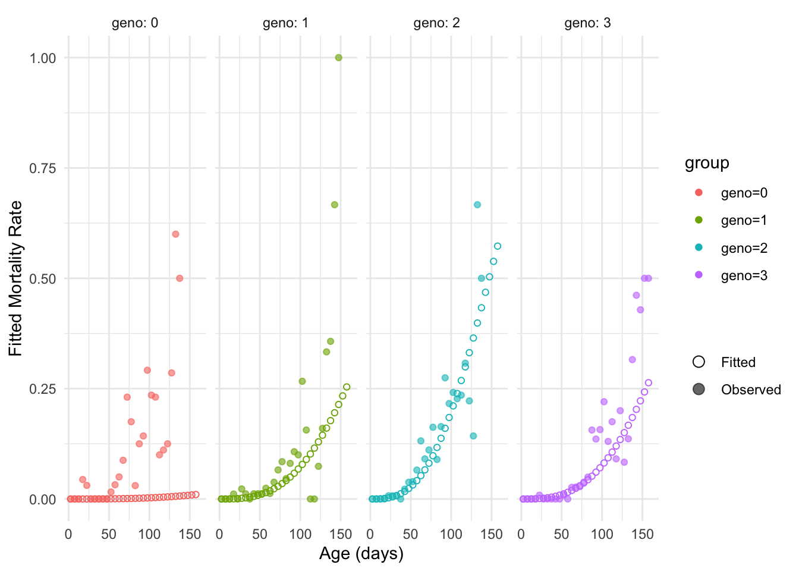

library(lifelihood)
#> Loading required package: tidyverse
#> ── Attaching core tidyverse packages ──────────────────────── tidyverse 2.0.0 ──
#> ✔ dplyr 1.2.1 ✔ readr 2.2.0
#> ✔ forcats 1.0.1 ✔ stringr 1.6.0
#> ✔ ggplot2 4.0.3 ✔ tibble 3.3.1
#> ✔ lubridate 1.9.5 ✔ tidyr 1.3.2
#> ✔ purrr 1.2.2
#> ── Conflicts ────────────────────────────────────────── tidyverse_conflicts() ──
#> ✖ dplyr::filter() masks stats::filter()
#> ✖ dplyr::lag() masks stats::lag()
#> ℹ Use the conflicted package (<http://conflicted.r-lib.org/>) to force all conflicts to become errors
library(tidyverse)
df <- datapierrick |>
as_tibble() |>
mutate(
par = as.factor(par),
geno = as.factor(geno),
spore = as.factor(spore)
) |>
filter(par == "0")
df |>
group_by(geno) |>
summarise(longevity = mean((death_start + death_end) / 2))
#> # A tibble: 4 × 2
#> geno longevity
#> <fct> <dbl>
#> 1 0 83.6
#> 2 1 109.
#> 3 2 81.7
#> 4 3 104.
clutchs <- generate_clutch_vector(28)
lifelihoodData <- as_lifelihoodData(
df = df,
sex = "sex",
sex_start = "sex_start",
sex_end = "sex_end",
maturity_start = "mat_start",
maturity_end = "mat_end",
clutchs = clutchs,
death_start = "death_start",
death_end = "death_end",
matclutch = FALSE,
covariates = c("par", "geno"),
dist = c("wei", "gam", "lgn")
)
## Right convergence
m1 <- lifelihood(
lifelihoodData = lifelihoodData,
path_config = use_test_config("config_pierrick_geno_death"),
raise_estimation_warning = FALSE,
delete_temp_files = FALSE,
seeds = c(2054, 9713, 3767, 8573)
# n_fit=10
)
AICc(m1)
#> [1] 57647.76337
summary(m1)
#>
#> === LIFELIHOOD RESULTS ===
#>
#> Sample size: 411
#>
#> --- Model Fit ---
#> Log-likelihood: -28812.551
#> AIC: 57647.1
#> BIC: 57691.3
#>
#> --- Key Parameters ---
#>
#> Mortality:
#> expt_death (Intercept) -1.015 (0.000)
#> expt_death eff_expt_death_geno_1 0.212 (0.000)
#> expt_death eff_expt_death_geno_2 -0.065 (0.000)
#> expt_death eff_expt_death_geno_3 0.226 (0.000)
#> survival_param2 (Intercept) -4.871 (0.000)
#>
#> Maturity:
#> expt_maturity (Intercept) -0.975 (0.000)
#> maturity_param2 (Intercept) -7.018 (0.000)
#>
#> Reproduction:
#> expt_reproduction (Intercept) -4.230 (0.000)
#> reproduction_param2 (Intercept) -3.386 (0.000)
#> n_offspring (Intercept) -2.538 (0.000)
#> increase_death_hazard (Intercept) -19.274 (0.000)
#>
#> --- Convergence ---
#> All parameters within bounds
#>
#> ======================
# Prediction
newdata <- data.frame(geno = 0:3)
newdata$geno <- factor(newdata$geno)
prediction(m1, "expt_death", newdata = newdata, type = "response")
#> [1] 86.21394060 100.29320697 82.16615269 101.26472405
plot_fitted_event_rate(
m1,
interval_width = 5,
event = "mortality",
use_facet = TRUE,
groupby = "geno",
xlab = "Age (days)",
ylab = "Fitted Mortality Rate"
)
#> Warning: Removed 14 rows containing missing values or values outside the scale range
#> (`geom_point()`).